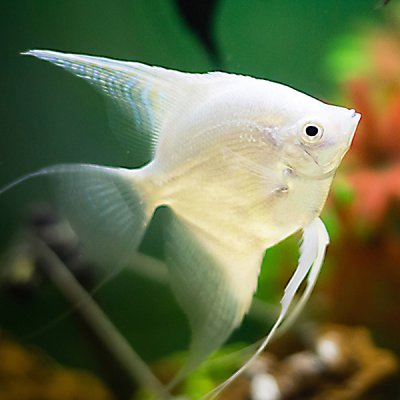

키클라목 키클라과의 민물천사고기속에 속하는 어류들의 통칭으로, 아마존 강과 그 지류에 주로 분포한다. 전반적으로 이등변삼각형 같은 독특한 생김새와 우아한 유영 모습 덕에 사육의 역사가 매우 길지만, 그럼에도 불구하고 위에서 설명한 엔젤피쉬만의 본연의 아름다움 덕분인지 구피나 디스커스같이 개량의 극을 달리는 물고기들과 비교하면 크게 개량되지 않았다. 실제로 리오나나이, 마나카푸르 레드백, 오리노코 알텀 등 개량과 사육의 역사가 오래된 타 어종들과 다르게 현재도 야생원종의 거래가 개량품종 만큼 활발한 어종이기도 하다. 일반적으로 많이 사육하는 종은 '프테로필룸 스칼라레(P. scalare)'로 보통 우리가 엔젤피쉬하면 떠올리는 그 물고기다. 또한 대형종인 '프테로필룸 알툼(P. altum)'도 많이 사육하며 오리노코알텀엔젤이라는 통상명으로 더 유명하다. 특히 오리노코 알텀 엔젤 사육은 과거에는 극악의 난이도로 유명했다. 채집 시즌이 되면 100원에서 500원짜리 동전만 한 유어들이 대랑으로 수입되지만, 서른 마리를 구매해도 한 마리 살리기가 힘들다는 말이 거의 정설처럼 퍼졌다. 일단 유어들이기 때문에 오랜 비행에서 큰 데미지를 입기도 하기 때문이다. 브라질 현지 수출 업체의 패킹이 성의가 없었던 데다가 워낙에 살리기 힘든 놈들이기 때문에 수족관에서도 폐사 부담이 본격화되기 전에 싸게라도 팔아 치우려고 했기 때문이다. 일반 민물천사고기는 국내 번식종과 동남아에서 양식된 것이 섞여 있다. 양식된 개체들은 난이도는 그리 높지 않다.
